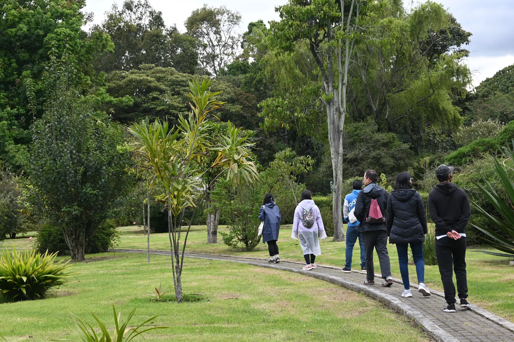
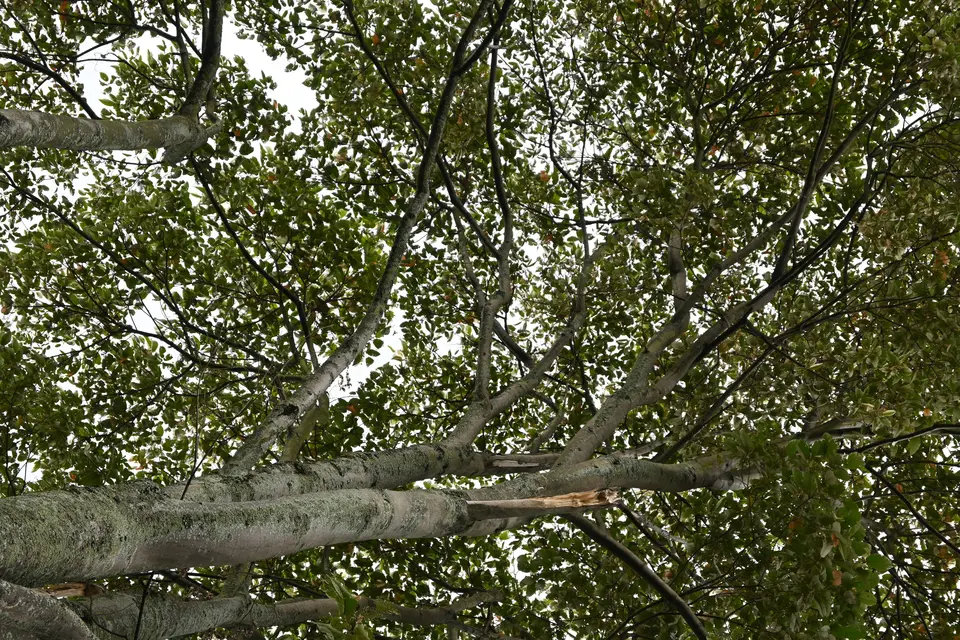
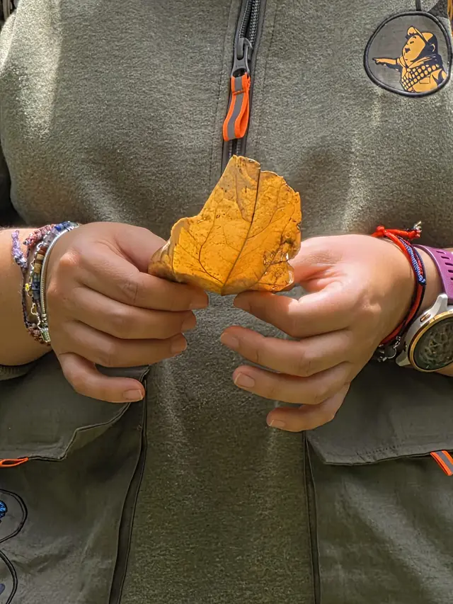
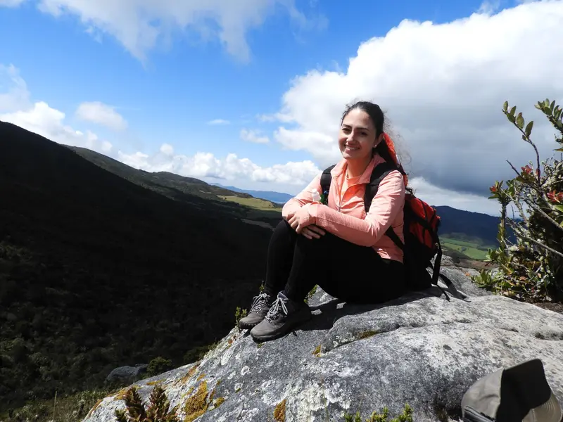
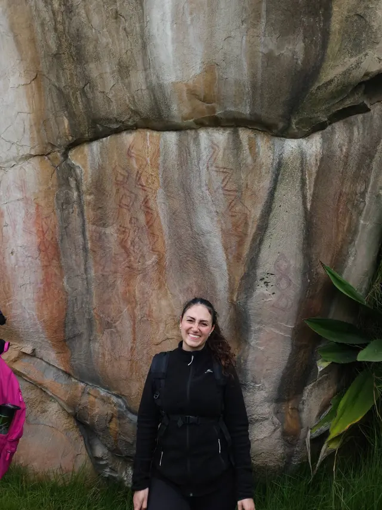
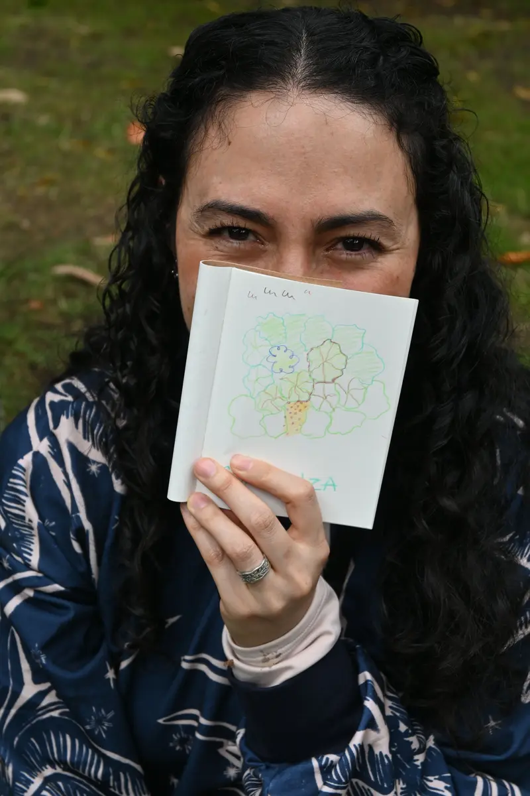

Preguntas para empezar
- ¿Te sorprendes llegando a casa y no sabes qué camino tomaste?
- ¿No sabes dónde se esconde ese cansancio que ni ocho horas de sueño curan?
- ¿Recuerdas la última vez que caminaste sin prisa?
- ¿Cuándo fue la última vez que notaste que respiras?
Si alguna resonó en ti, este recorrido es para ti.

Qué es Solmaranto
Solmaranto son caminatas guiadas en espacios naturales de Bogotá. Mientras caminamos, combinamos atención plena en movimiento, contemplación, ejercicios sencillos y conocimiento del entorno natural: caminatas conscientes, baños de bosque y mindfulness en la naturaleza.
Aquí no se enseña a escapar de la vida ni a hacerla callar. Se trata de sentirla tal como es, con su ruido y su movimiento constante. Por eso las meditaciones se hacen caminando.
Cada persona vive lo suyo. Nadie te marca una dirección.
Qué lo hace distinto

-
La experiencia, no el destino
Muchas propuestas se centran en el paisaje y la fotografía. Aquí el recorrido es la experiencia: lo que notas, lo que sientes y lo que haces con cada paso.
-
Meditaciones por audífono
Cada persona escucha la guía en su audífono individual. No hace falta elevar la voz, y el canto de los pájaros sigue sonando.
-
Un vínculo con el territorio
Bogotá tiene jardines, bosques y páramo muy cerca. Caminamos para conocerlos y construir tu propia relación con ellos.
Quién te guía

Gina Grisales Serna
Soy una caminante del alma. La espiritualidad es mi brújula diaria y la naturaleza mi maestra favorita.
- Guía turística con Registro Nacional de Turismo vigente
- Especialista en Baños de Bosque (Shinrin-Yoku), Forest Therapy Hub
- Certificada en Intervenciones basadas en Mindfulness, Universidad de los Andes
- Miembro de la organización ambiental La Memoria del Frailejón, con conocimiento del ecosistema de páramo

Mi historia
Durante años pasé mis días frente a una pantalla, entre reuniones y carpetas, sin darme cuenta de cómo eso me apagaba.
La práctica de la atención plena al aire libre me enseñó a respirar de nuevo. Eso me llevó a cambiar pantallas por senderos y a formarme como guía, para compartir con otras personas lo que encontré entre los árboles.

Un paseo con los sentidos
Una caminata guiada con atención plena en el Jardín Botánico de Bogotá. Escuchas la guía por un audífono individual y cada persona vive el recorrido a su ritmo.
- Lugar
- Hora
- Duración
- Cupos
- Precio por persona
Próximas fechas
Vendrán nuevos recorridos por otros espacios naturales de Bogotá.
Lo que viven quienes caminan
Escríbenos
Cuéntanos qué fecha te queda bien y reserva tu cupo por WhatsApp.
Reservar por WhatsApp¿Ya viviste el paseo? Cuéntame cómo viviste tu paseo